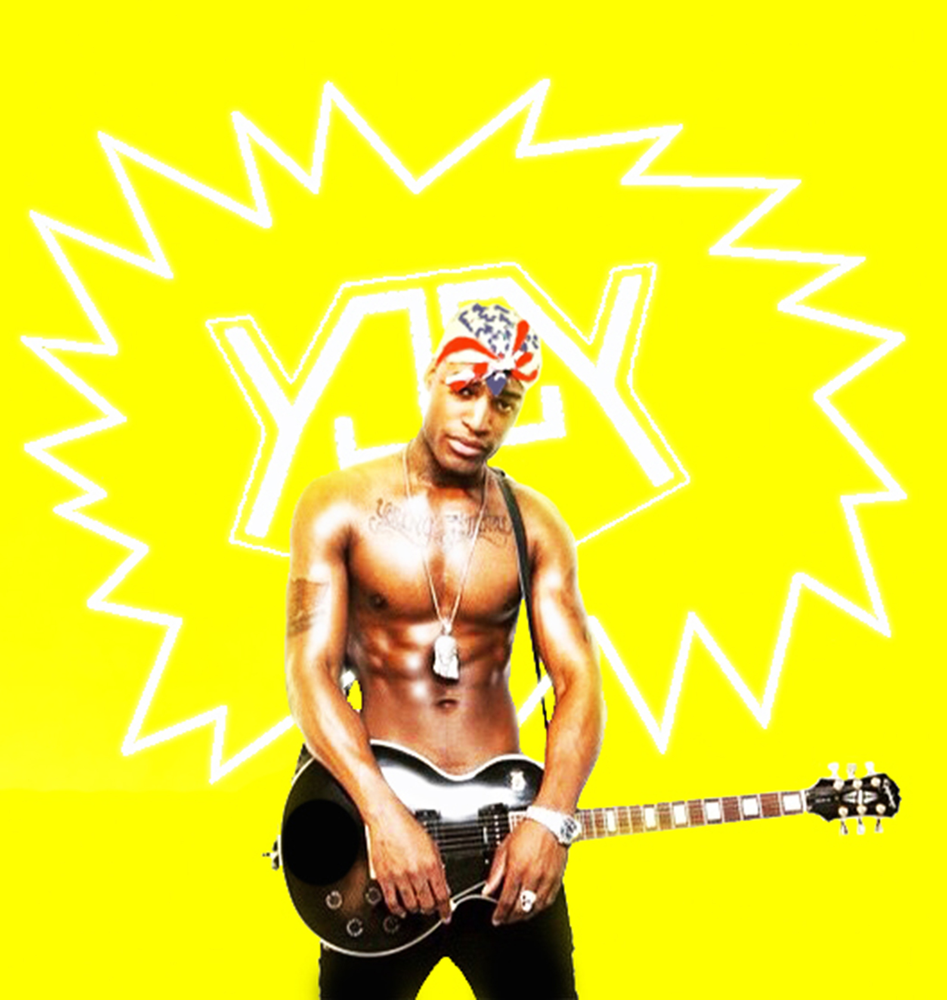

YJ, formally Young Jimmy, guitarist turned rapper coming out of the now notorious East Chester Gardens projects in the Bronx, got his start in music in Bushwick at the age of six. He received his first guitar from a family member, two years later relocating to the Bronx. He attended the High School of Art and Design and received a scholarship from Greenwich House Music School. After dropping out of high school he began busking on the streets of NYC and playing alongside many rock and hip-hop groups including an all black indie rock band called “Sankofa” who were written up in Afro-Punk.
YJ has opened and shared the stage with such acts as Kendrick Lamar, Saul Williams, Big Krit, Taleb Kweli & michelle williams, Grand Master Mele Mel, Smoke Dza, Lil Debbie, Ces Cru, Tanya Morgan, Res, Jay Boogie, Prince Harvey and Freddie Gibbs. He has performed at such notable venues such as Webster Hall, Santos Party House, House of Yes, South Paw, Arlene’s Grocery, By Robert James, Afro-Punk Showcase, Gold Sounds, Friends and Lovers, Tender Trap and The Danger. His music is a medley of many genres; hip hop, Rap, Trap, punk, jazz, and indie rock music. YJ will Release new music this spring off his independent label, Tri-Skate Records.
YJ has opened and shared the stage with such acts as Kendrick Lamar, Saul Williams, Big Krit, Taleb Kweli & michelle williams, Grand Master Mele Mel, Smoke Dza, Lil Debbie, Ces Cru, Tanya Morgan, Res, Jay Boogie, Prince Harvey and Freddie Gibbs. He has performed at such notable venues such as Webster Hall, Santos Party House, House of Yes, South Paw, Arlene’s Grocery, By Robert James, Afro-Punk Showcase, Gold Sounds, Friends and Lovers, Tender Trap and The Danger. His music is a medley of many genres; hip hop, Rap, Trap, punk, jazz, and indie rock music. YJ will Release new music this spring off his independent label, Tri-Skate Records.
{kind=link}